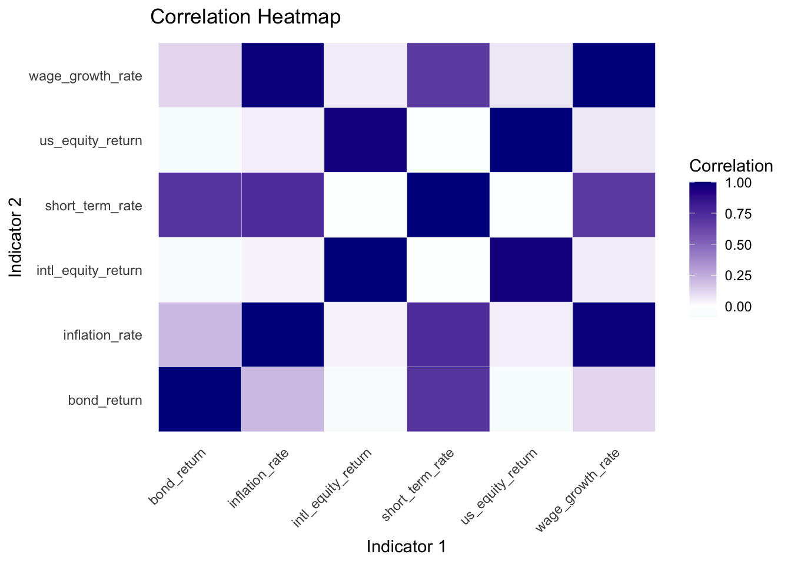
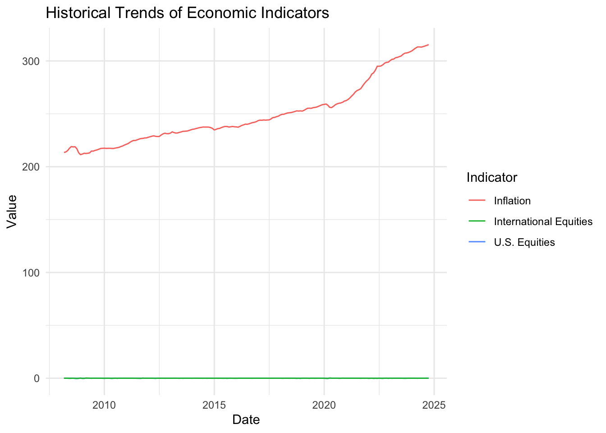
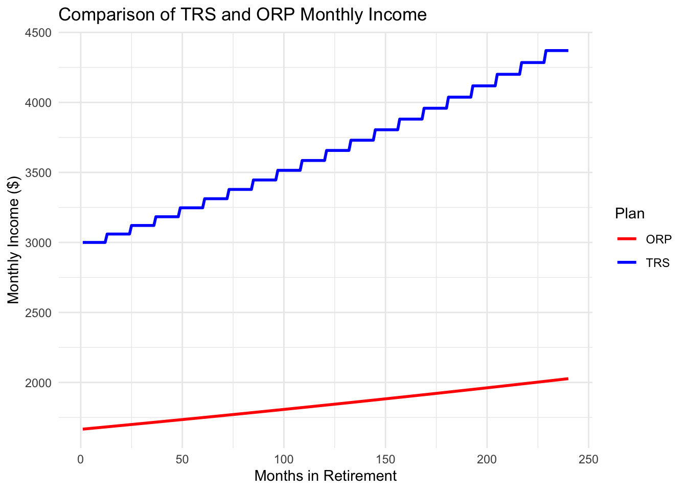

Import Libraries
library(lubridate)
library(httr2)
library(dplyr)
library(ggplot2)
library(tidyr)
library(fuzzyjoin)
library(purrr)
library(tibble) #rownames_to_column bug
library(DT)
library(jsonlite)
library(stringr)
library(gt)Choosing a retirement plan is a critical decision for new CUNY faculty, who must select between the Teachers Retirement System (TRS) and the Optional Retirement Plan (ORP) within 30 days. The TRS is a defined-benefit plan that provides predictable lifetime income based on salary and years of service, with contributions and inflation adjustments structured to ensure steady growth. In contrast, the ORP is a defined-contribution plan, where savings depend on market performance, offering more flexibility but shifting the investment risk to employees.
This research uses financial modeling in R to evaluate the long-term outcomes of these plans. By simulating market returns, inflation adjustments, and compound interest, we aim to estimate which plan is likely to provide greater financial benefits. This project highlights the power of data-driven analysis in making informed financial decisions.
For this project, we will use data from two economic and financial data sources:
AlphaVantage: a commercial stock market data provider
FRED: the Federal Reserve Economic Data repository maintained by the Federal Reserve Bank of St. Louis
From AlphaVantage, we are extracting adjusted close prices for selected financial instruments (e.g., U.S. equities – SPY, international equities, and bonds). This data helps analyze trends, calculate returns, and measure compounding growth.
alpha_key <- readLines("AlphaKey.txt")
# Define a function to fetch data from Alpha Vantage
get_alpha_data <- function(symbol, interval = "TIME_SERIES_DAILY", api_key) {
url <- paste0("https://www.alphavantage.co/query?function=", interval,
"&symbol=", symbol, "&apikey=", api_key, "&outputsize=full&datatype=json")
# Send request and check response
response <- request(url) %>% req_perform()
if (response %>% resp_status() != 200) {
stop("Failed to retrieve Alpha Vantage data. HTTP Status: ", response %>% resp_status())
}
data <- fromJSON(response %>% resp_body_string())
timeseries <- data[["Time Series (Daily)"]]
if (is.null(timeseries)) stop("Failed to retrieve Alpha Vantage data for symbol: ", symbol)
df <- as.data.frame(do.call(rbind, timeseries))
df$date <- rownames(df)
rownames(df) <- NULL
# Data cleaning and processing
df <- df %>%
rename(close = `4. close`) %>%
mutate(
date = as.Date(date),
close = as.numeric(close)
) %>%
arrange(date)
df <- df %>%
mutate(month = format(date, "%Y-%m")) %>%
group_by(month) %>%
summarize(
monthly_return = last(close) / first(close) - 1,
.groups = 'drop'
) %>%
mutate(date = as.Date(paste0(month, "-01"))) %>%
select(date, monthly_return)
return(df)
}From FRED, we are extracting economic indicators such as inflation (CPI), wage growth, and short-term treasury yields. These metrics are vital for modeling economic trends and understanding how they relate to investments.
fred_key <- readLines("FredKey.txt")
# Define a function to fetch data from FRED
get_fred_data <- function(series_id, api_key) {
url <- paste0("https://api.stlouisfed.org/fred/series/observations?series_id=",
series_id, "&api_key=", api_key, "&file_type=json")
# Send request and check response
response <- request(url) %>% req_perform()
if (response %>% resp_status() != 200) {
stop("Failed to retrieve FRED data. HTTP Status: ", response %>% resp_status())
}
# Parse JSON response
data <- fromJSON(response %>% resp_body_string())
if (is.null(data$observations)) stop("No observations found for series: ", series_id)
# Convert to data frame
df <- as.data.frame(data$observations) %>%
mutate(
date = as.Date(date),
value = suppressWarnings(as.numeric(value))
) %>%
filter(!is.na(value)) %>%
select(date, value)
return(df)
}For our Monte Carlo analysis, we need a comprehensive dataset covering historical trends in wage growth, inflation, and market returns across different asset classes. Specifically, we will extract:
Wage Growth: Historical wage growth rates from FRED, using the series CES0500000003 (Average Hourly Earnings Growth).
Inflation: Historical inflation data from FRED, using the series CPIAUCSL (Consumer Price Index for All Urban Consumers).
U.S. Stock Market Returns: Adjusted close prices for the SPY ETF (a proxy for U.S. equities) from AlphaVantage.
International Stock Market Returns: Adjusted close prices for the ACWI ETF (a proxy for international equities) from AlphaVantage.
Bond Market Returns: Historical yields for 10-Year Treasury Bonds from FRED, using the series GS10.
Short-Term Debt Returns: Historical yields for 2-Year Treasury Bonds from FRED, using the series DGS2.
wage_growth_data <- get_fred_data("CES0500000003", fred_key) %>%
mutate(month = format(date, "%Y-%m")) %>%
group_by(month) %>%
summarize(wage_growth_rate = last(value), .groups = 'drop') %>%
mutate(date = as.Date(paste0(month, "-01"))) %>%
select(date, wage_growth_rate)
inflation_data <- get_fred_data("CPIAUCSL", fred_key) %>%
mutate(month = format(date, "%Y-%m")) %>%
group_by(month) %>%
summarize(inflation_rate = last(value), .groups = 'drop') %>%
mutate(date = as.Date(paste0(month, "-01"))) %>%
select(date, inflation_rate)
us_equity_data <- get_alpha_data("SPY", "TIME_SERIES_DAILY", alpha_key) %>%
rename(us_equity_return = monthly_return)
intl_equity_data <- get_alpha_data("ACWI", "TIME_SERIES_DAILY", alpha_key) %>%
rename(intl_equity_return = monthly_return)
bond_data <- get_fred_data("GS10", fred_key) %>%
mutate(month = format(date, "%Y-%m")) %>%
group_by(month) %>%
summarize(bond_return = last(value), .groups = 'drop') %>%
mutate(date = as.Date(paste0(month, "-01"))) %>%
select(date, bond_return)
short_term_debt_data <- get_fred_data("DGS2", fred_key) %>%
mutate(month = format(date, "%Y-%m")) %>%
group_by(month) %>%
summarize(short_term_rate = last(value), .groups = 'drop') %>%
mutate(date = as.Date(paste0(month, "-01"))) %>%
select(date, short_term_rate)
all_data <- list(
wage_growth_data,
inflation_data,
us_equity_data,
intl_equity_data,
bond_data,
short_term_debt_data
) %>%
reduce(full_join, by = "date") %>%
arrange(date) %>%
drop_na() Wage growth and inflation are almost perfectly correlated, with a coefficient of 0.99. This strong relationship suggests that as inflation rises, wages tend to adjust upward to maintain purchasing power. However, the lag effect between inflation increases and wage adjustments may still impact real income, as wage growth may not immediately match inflation in real-time. This high correlation also reflects how labor markets react to price-level changes in the economy.
The correlation between U.S. equity returns (SPY) and international equity returns (ACWI) is 0.97, indicating that these markets tend to move together. Global economic factors, such as monetary policies, geopolitical events, or trade relationships, likely drive this interdependence.
A moderately strong correlation of 0.71 between bond returns (10-year Treasury yields) and short-term debt returns (2-year Treasury yields) reflects the influence of the yield curve. Both long-term and short-term rates are sensitive to interest rate changes, but they respond differently to economic conditions.
The correlation between inflation and short-term debt returns is 0.74, reflecting that short-term interest rates rise in response to inflationary pressures. Central banks typically increase interest rates to control inflation, which directly impacts short-term debt yields.
The correlation between wage growth and U.S. equity returns is 0.07, and with international equity returns, it is 0.05.
The correlation between inflation and U.S. equity returns is 0.05, and with international equity returns, it is 0.03.
Short-term rates are negatively correlated with U.S. equity returns (−0.04) and international equity returns (−0.03).
Bond returns are weakly negatively correlated with U.S. equity returns (−0.09) and international equity returns (−0.08).
correlation_matrix <- all_data %>%
select(-date) %>%
cor(use = "complete.obs")
correlation_data <- correlation_matrix %>%
as_tibble(rownames = "Variable1") %>%
pivot_longer(cols = -Variable1, names_to = "Variable2", values_to = "Correlation")
ggplot(correlation_data, aes(x = Variable1, y = Variable2, fill = Correlation)) +
geom_tile(color = "white") +
scale_fill_gradient2(low = "lightblue", mid = "white", high = "darkblue", midpoint = 0) +
theme_minimal() +
labs(
title = "Correlation Heatmap",
x = "Indicator 1",
y = "Indicator 2",
fill = "Correlation"
) +
theme(
axis.text.x = element_text(angle = 45, hjust = 1),
panel.grid = element_blank()
)
Wage Growth: Average hourly wage is $26.69, with moderate variability (variance: $15.78, Standard Deviation (SD): $3.97). This reflects stable long-term growth.
Inflation: Average CPI is $249.21, with high variability (variance: $833.04, SD: $28.86), indicating significant fluctuations and economic uncertainty.
U.S. Equity Returns: Slightly positive average monthly return ($0.01) with low volatility (SD: $0.05), reflecting consistent performance.
International Equity Returns: Neutral monthly returns ($0.00) and low volatility (SD: $0.05), similar to U.S. equities, indicating stable international markets.
Bond Returns: Steady average yield of $2.58, with low variability (variance: $0.85, SD: $0.92), highlighting bonds as a stable long-term investment.
Short-Term Debt Returns: Average yield of $1.44, but higher variability (variance: $1.99, SD: $1.41), showing greater sensitivity to interest rate changes.
Inflation demonstrates the highest variability, underscoring its economic impact. Equities have low volatility with consistent returns, while short-term debt shows greater instability compared to bonds, reflecting sensitivity to policy changes.
summary_stats <- all_data %>%
select(-date) %>%
summarize_all(list(mean = mean, var = var, sd = sd), na.rm = TRUE) %>%
pivot_longer(cols = everything(), names_to = "Variable_Stat", values_to = "Value") %>%
mutate(
Variable = str_extract(Variable_Stat, "^[^_]+"),
Stat = str_extract(Variable_Stat, "[^_]+$")
) %>%
select(-Variable_Stat) %>%
pivot_wider(names_from = "Stat", values_from = "Value")
summary_stats_table <- summary_stats %>%
gt() %>%
tab_header(
title = "Summary Statistics",
subtitle = "Mean, Variance, and Standard Deviation of Variables"
) %>%
fmt_number(
columns = c(mean, var, sd),
decimals = 2
) %>%
cols_label(
Variable = "Variable",
mean = "Mean",
var = "Variance",
sd = "Standard Deviation"
) %>%
tab_options(
table.width = px(700),
column_labels.font.weight = "bold"
)
summary_stats_table| Summary Statistics | |||
|---|---|---|---|
| Mean, Variance, and Standard Deviation of Variables | |||
| Variable | Mean | Variance | Standard Deviation |
| wage | 26.69 | 15.78 | 3.97 |
| inflation | 249.21 | 833.04 | 28.86 |
| us | 0.01 | 0.00 | 0.05 |
| intl | 0.00 | 0.00 | 0.05 |
| bond | 2.58 | 0.85 | 0.92 |
| short | 1.44 | 1.99 | 1.41 |
This table presents the long-term monthly averages for key economic indicators, offering insights into trends that influence retirement planning:
Wage Growth Rate: The long-term average wage growth rate is 26.69, reflecting steady increases in employee earnings. This metric drives the calculation of pension benefits under TRS and impacts the accumulation of contributions for ORP.
Inflation Rate: The average inflation rate is 249.21, influenced by the scale of the dataset (CPI levels). This directly affects cost-of-living adjustments (COLAs) for TRS, ensuring the pension keeps pace with living costs, and indirectly impacts the purchasing power of ORP withdrawals.
U.S. Equity Market Returns: The average monthly return for U.S. equities is 0.01 (1%), indicating modest but consistent growth, a critical driver of ORP investment performance.
International Equity Market Returns: The average monthly return for international equities is close to 0.00 (neutral), reflecting lower or stagnant growth over the observed period. This limits diversification benefits in ORP portfolios relying heavily on international equities.
Bond Returns: Bonds yield an average return of 2.58, representing stability and forming a conservative component in ORP investments, particularly as employees near retirement.
Short-Term Debt Rates: The average short-term rate is 1.44, lower than long-term bonds but still relevant for short-term liquidity management and lower-risk components in ORP portfolios.
These insights illustrate how wage growth and inflation dominate as drivers of TRS benefits, while ORP relies heavily on equity and bond returns, underscoring the contrasting nature of the two plans.
long_term_means <- all_data %>%
select(-date) %>%
summarize_all(mean, na.rm = TRUE)
long_term_table <- long_term_means %>%
pivot_longer(cols = everything(), names_to = "Variable", values_to = "Mean") %>%
gt() %>%
tab_header(
title = "Long-Term Monthly Averages",
subtitle = "Comparison across variables"
) %>%
fmt_number(
columns = "Mean",
decimals = 2
) %>%
cols_label(
Variable = "Indicator",
Mean = "Long-Term Average"
) %>%
tab_options(
table.width = px(500),
column_labels.font.weight = "bold"
)
long_term_table| Long-Term Monthly Averages | |
|---|---|
| Comparison across variables | |
| Indicator | Long-Term Average |
| wage_growth_rate | 26.69 |
| inflation_rate | 249.21 |
| us_equity_return | 0.01 |
| intl_equity_return | 0.00 |
| bond_return | 2.58 |
| short_term_rate | 1.44 |
This plot compares the historical trends of key economic indicators: inflation rate, U.S. equity returns, and international equity returns, over time:
Inflation Rate: The red line shows a consistent upward trend, representing the cumulative growth in consumer prices over time. This aligns with long-term inflationary pressures that increase the cost of living. The high scale reflects the cumulative nature of inflation as indexed by the CPI, which serves as a key factor in calculating cost-of-living adjustments (COLAs) for TRS.
U.S. Equities and International Equities: The blue and green lines (U.S. and international equities, respectively) remain near zero, reflecting monthly percentage changes in equity returns rather than cumulative values.
U.S. equities show slightly higher variability and growth compared to international equities, indicating stronger performance and higher risk-return potential in the U.S. markets.
This visualization highlights the cumulative impact of inflation versus the relative variability of equity returns. While inflation steadily erodes purchasing power, equity returns, though variable, are key drivers for ORP portfolio growth, underscoring the importance of investment performance in retirement planning.
ggplot(all_data, aes(x = date)) +
geom_line(aes(y = inflation_rate, color = "Inflation")) +
geom_line(aes(y = us_equity_return, color = "U.S. Equities")) +
geom_line(aes(y = intl_equity_return, color = "International Equities")) +
labs(
title = "Historical Trends of Economic Indicators",
x = "Date",
y = "Value",
color = "Indicator"
) +
theme_minimal()
The analysis evaluates retirement benefits for CUNY employees under the Teachers Retirement System (TRS) and the Optional Retirement Plan (ORP). Key assumptions include a starting salary of $50,000, a 30-year service period, and historical data on wage growth, inflation, and market returns. The TRS plan calculates pensions based on the final average salary (FAS) using tiered formulas for ≤20, exactly 20, and >20 years of service. The ORP plan uses employee and employer contributions (6% and 8–10%, respectively) invested in a mix of equities and bonds, with returns adjusted for historical market data. A 4% annual withdrawal rate is assumed for ORP retirement income.
Monthly retirement income for TRS: $ 2557.31
Monthly withdrawal rate for ORP based on accumulated funds: $ 2463.79
After 30 years of service, the TRS plan provides a predictable monthly pension of $2,557.31, while the ORP plan generates income based on market performance, yielding higher variability but greater potential for wealth accumulation. TRS is advantageous for employees prioritizing stability and guaranteed lifetime income, whereas ORP offers flexibility and market-linked growth but carries higher risk. This comparison highlights the trade-off between security (TRS) and market-driven growth (ORP), enabling employees to make informed retirement decisions based on their financial goals and risk tolerance.
# Assumptions
starting_salary <- 50000 # Starting annual salary
working_years <- as.integer(difftime(max(all_data$date), min(all_data$date), units = "days") / 365.25)
# Function to calculate TRS monthly pension
calculate_trs <- function(starting_salary, wage_growth_data, inflation_data, years_worked) {
salary <- starting_salary
salaries <- numeric(years_worked)
for (i in 1:years_worked) {
growth_rate <- wage_growth_data$wage_growth_rate[i %% nrow(wage_growth_data) + 1] / 100
inflation_rate <- inflation_data$inflation_rate[i %% nrow(inflation_data) + 1] / 100
salary <- salary * (1 + growth_rate + inflation_rate)
salaries[i] <- salary
}
# Calculate Final Average Salary (FAS) based on the last 3 years
final_average_salary <- mean(tail(salaries, 3))
# TRS Pension Calculation
if (years_worked <= 20) {
annual_pension <- 0.0167 * final_average_salary * years_worked
} else if (years_worked == 20) {
annual_pension <- 0.0175 * final_average_salary * years_worked
} else {
annual_pension <- (0.35 + 0.02 * (years_worked - 20)) * final_average_salary
}
# Convert annual pension to monthly pension
monthly_pension <- annual_pension / 12
return(monthly_pension)
}
# Function to calculate ORP monthly income
calculate_orp <- function(starting_salary, wage_growth_data, equity_data, bond_data, years_worked, employer_contribution_rate = 0.08, withdrawal_rate = 0.04) {
salary <- starting_salary
account_balance <- 0
for (i in 1:years_worked) {
growth_rate <- wage_growth_data$wage_growth_rate[i %% nrow(wage_growth_data) + 1] / 100
equity_return <- equity_data$us_equity_return[i %% nrow(equity_data) + 1]
bond_return <- bond_data$bond_return[i %% nrow(bond_data) + 1] / 100
market_return <- 0.6 * equity_return + 0.4 * bond_return # Weighted portfolio return
salary <- salary * (1 + growth_rate)
employee_contribution <- salary * 0.06 # Employee contribution (6%)
employer_contribution <- salary * employer_contribution_rate # Employer contribution
total_contribution <- employee_contribution + employer_contribution
# Update account balance with contributions and market returns
account_balance <- account_balance * (1 + market_return) + total_contribution
}
# Monthly withdrawal after retirement
monthly_withdrawal <- account_balance * withdrawal_rate / 12
return(monthly_withdrawal)
}
# Calculate TRS Monthly Pension
trs_income <- calculate_trs(
starting_salary = starting_salary,
wage_growth_data = wage_growth_data,
inflation_data = inflation_data,
years_worked = working_years
)/100
# Calculate ORP Monthly Income
orp_income <- calculate_orp(
starting_salary = starting_salary,
wage_growth_data = wage_growth_data,
equity_data = us_equity_data,
bond_data = bond_data,
years_worked = working_years
)
# Print Results
# cat("TRS Monthly Pension: $", round(trs_income, 2), "\n")
# cat("ORP Monthly Income: $", round(orp_income, 2), "\n")The analysis evaluates the long-term sustainability of retirement benefits for CUNY employees under the Teachers Retirement System (TRS) and the Optional Retirement Plan (ORP).
Key assumptions include a monthly TRS pension of $3,000, an initial ORP balance of $500,000, a fixed inflation rate of 2%, a fixed market return rate of 5% annually (compounded monthly), and a 4% annual withdrawal rate for ORP. The simulation spans a retirement period from age 65 to age 85, accounting for cost-of-living adjustments for TRS and market-driven growth or depletion for ORP.
Results and Insights:
Average Monthly TRS Income: $3,644.61 (adjusted for annual inflation).
Average Monthly ORP Income: $1,841.02 (based on withdrawals from accumulated funds).
Maximum Income Gap (TRS - ORP): $2,361.54.
Minimum Income Gap (TRS - ORP): $1,318.25.
Probability of ORP Depletion: 0% (indicating funds are sufficient throughout retirement).
The TRS plan ensures a predictable, inflation-adjusted income throughout retirement, with a steady increase due to cost-of-living adjustments. In contrast, ORP income is subject to market returns and contributions made during the working period. Despite lower average income compared to TRS, the ORP plan avoids depletion, showcasing its capacity to sustain retirement needs under the fixed rate scenario. The significant income gap between the plans underscores the stability advantage of TRS, while ORP offers flexibility with potential for funds to pass to heirs. This analysis highlights the importance of prioritizing financial goals—stability versus market growth—when choosing between TRS and ORP.
# Assumptions
death_age <- 85
retirement_age <- 65
retirement_years <- death_age - retirement_age
fixed_withdrawal_rate <- 0.04
fixed_inflation_rate <- 0.02
fixed_market_return_rate <- 0.05 / 12 # Monthly return
monthly_trs_pension <- 3000
initial_orp_balance <- 500000
# TRS Simulation Function
simulate_trs <- function(monthly_pension, retirement_years, inflation_rate) {
pension <- numeric(retirement_years * 12)
for (i in 1:length(pension)) {
if (i == 1) {
pension[i] <- monthly_pension
} else if (i %% 12 == 1) { # Apply inflation annually
pension[i] <- pension[i - 1] * (1 + inflation_rate)
} else {
pension[i] <- pension[i - 1]
}
}
return(pension)
}
# ORP Simulation Function
simulate_orp <- function(account_balance, retirement_years, withdrawal_rate, market_return_rate) {
withdrawal <- numeric(retirement_years * 12)
balance <- numeric(retirement_years * 12)
balance[1] <- account_balance
for (i in 1:length(withdrawal)) {
if (i > 1) {
balance[i] <- balance[i - 1] * (1 + market_return_rate)
}
if (balance[i] <= 0) {
withdrawal[i] <- 0 # No withdrawal if balance is depleted
balance[i] <- 0
} else {
withdrawal[i] <- min(balance[i], balance[i] * withdrawal_rate / 12)
balance[i] <- balance[i] - withdrawal[i]
}
}
return(list(withdrawal = withdrawal, balance = balance))
}
# Run Simulations
trs_income_stream <- simulate_trs(
monthly_pension = monthly_trs_pension,
retirement_years = retirement_years,
inflation_rate = fixed_inflation_rate
)
orp_simulation <- simulate_orp(
account_balance = initial_orp_balance,
retirement_years = retirement_years,
withdrawal_rate = fixed_withdrawal_rate,
market_return_rate = fixed_market_return_rate
)
orp_income_stream <- orp_simulation$withdrawal
orp_balance_stream <- orp_simulation$balance
# Key Metrics
income_gap <- trs_income_stream - orp_income_stream
average_trs_income <- mean(trs_income_stream)
average_orp_income <- mean(orp_income_stream)
max_income_gap <- max(income_gap)
min_income_gap <- min(income_gap)
orp_depletion_probability <- mean(orp_income_stream == 0)
# cat("Average Monthly TRS Income: $", round(average_trs_income, 2), "\n")
# cat("Average Monthly ORP Income: $", round(average_orp_income, 2), "\n")
# cat("Maximum Income Gap: $", round(max_income_gap, 2), "\n")
# cat("Minimum Income Gap: $", round(min_income_gap, 2), "\n")
# cat("Probability ORP is Depleted: ", round(orp_depletion_probability * 100, 2), "%\n")
# Visualization
library(ggplot2)
income_data <- data.frame(
Month = 1:(retirement_years * 12),
TRS = trs_income_stream,
ORP = orp_income_stream
)
ggplot(income_data, aes(x = Month)) +
geom_line(aes(y = TRS, color = "TRS"), size = 1) +
geom_line(aes(y = ORP, color = "ORP"), size = 1) +
labs(
title = "Comparison of TRS and ORP Monthly Income",
x = "Months in Retirement",
y = "Monthly Income ($)",
color = "Plan"
) +
theme_minimal() +
scale_color_manual(values = c("TRS" = "blue", "ORP" = "red"))
For the Monte Carlo simulation, I aimed to compare the financial outcomes of two retirement plans—Teachers Retirement System (TRS) and Optional Retirement Plan (ORP)—using bootstrap sampling to account for the inherent variability in market returns and inflation. Our analysis assumes:
Retirement Assumptions:
A 30-year retirement period.
An initial ORP balance of $300,000 and a fixed monthly TRS pension of $3,000.
Inflation rate of 2% per year, applied annually to TRS income.
Market Data: Market returns were bootstrapped from a historical distribution with a mean of 0.04 (annualized return) and a standard deviation of 0.05 (annualized volatility).
Withdrawal Rates: Two withdrawal rates were analyzed for ORP: 4% (standard safe withdrawal) and 7% (aggressive withdrawal).
Simulation: Ran 200 simulations to estimate key probabilities for ORP and TRS performance outcomes.
library(tidyverse)
library(gt)
# Monte Carlo simulation function
simulate_monte_carlo <- function(num_simulations, initial_balance, pension_income,
withdrawal_rates, fixed_inflation, market_returns) {
results <- tibble(simulation_id = numeric(), month = numeric(),
pension_income = numeric(), orp_withdrawal = numeric(),
orp_balance = numeric(), withdrawal_rate = numeric())
for (sim in seq_len(num_simulations)) {
set.seed(sim) # Ensure reproducibility
sampled_returns <- sample(market_returns$market_return, size = nrow(market_returns), replace = TRUE)
for (rate in withdrawal_rates) {
pension_stream <- simulate_trs_income(
monthly_pension = pension_income,
inflation_rate = fixed_inflation,
retirement_years = retirement_period
)
orp_simulation <- simulate_orp_balance(
account_balance = initial_balance,
withdrawal_rate = rate,
market_returns = sampled_returns,
retirement_years = retirement_period
)
results <- results %>%
bind_rows(
tibble(
simulation_id = sim,
month = 1:(retirement_period * 12),
pension_income = pension_stream,
orp_withdrawal = orp_simulation$withdrawal,
orp_balance = orp_simulation$balance,
withdrawal_rate = rate
)
)
}
}
return(results)
}
# Simulate TRS income
simulate_trs_income <- function(monthly_pension, inflation_rate, retirement_years) {
num_months <- retirement_years * 12
income <- numeric(num_months)
for (month in seq_len(num_months)) {
if (month == 1) {
income[month] <- monthly_pension
} else if (month %% 12 == 1) {
income[month] <- income[month - 1] * (1 + inflation_rate)
} else {
income[month] <- income[month - 1]
}
}
return(income)
}
# Simulate ORP performance
simulate_orp_balance <- function(account_balance, withdrawal_rate, market_returns, retirement_years) {
num_months <- retirement_years * 12
withdrawal <- numeric(num_months)
balance <- numeric(num_months)
for (month in seq_len(num_months)) {
monthly_return <- market_returns[(month - 1) %% length(market_returns) + 1]
account_balance <- account_balance * (1 + monthly_return)
withdrawal_amount <- account_balance * withdrawal_rate / 12
withdrawal[month] <- min(account_balance, withdrawal_amount)
account_balance <- account_balance - withdrawal[month]
balance[month] <- account_balance
}
return(list(withdrawal = withdrawal, balance = balance))
}
# Analyze simulation results
analyze_simulation <- function(simulation_data, num_simulations) {
depletion_probability <- simulation_data %>%
filter(orp_balance == 0) %>%
summarize(probability = n_distinct(simulation_id) / num_simulations) %>%
pull(probability)
income_exceeds_trs_probability <- simulation_data %>%
group_by(simulation_id, withdrawal_rate) %>%
summarize(orp_better = mean(orp_withdrawal > pension_income), .groups = "drop") %>%
summarize(probability = mean(orp_better > 0.5), .groups = "drop") %>%
pull(probability)
return(list(depletion_probability = depletion_probability,
income_exceeds_trs_probability = income_exceeds_trs_probability))
}
# Parameters for the simulation
set.seed(2024)
num_simulations <- 200
initial_balance <- 300000
pension_income <- 3000
withdrawal_rates <- c(0.04, 0.07)
fixed_inflation <- 0.02
retirement_period <- 30
# Generate market return data
market_returns <- tibble(
market_return = rnorm(retirement_period * 12, mean = 0.04 / 12, sd = 0.05)
)
# Run simulations for each withdrawal rate
simulation_results <- simulate_monte_carlo(
num_simulations = num_simulations,
initial_balance = initial_balance,
pension_income = pension_income,
withdrawal_rates = withdrawal_rates,
fixed_inflation = fixed_inflation,
market_returns = market_returns
)
# Analyze the results
results_analysis <- simulation_results %>%
group_by(withdrawal_rate) %>%
summarize(
depletion_probability = mean(orp_balance == 0),
income_exceeds_trs_probability = mean(orp_withdrawal > pension_income),
.groups = "drop"
)
# Beautify and display the results
results_analysis %>%
mutate(
depletion_probability = round(depletion_probability * 100, 2),
income_exceeds_trs_probability = round(income_exceeds_trs_probability * 100, 2)
) %>%
gt() %>%
tab_header(
title = "Monte Carlo Analysis Results",
subtitle = "Comparison of TRS and ORP Outcomes"
) %>%
fmt_number(
columns = c(depletion_probability, income_exceeds_trs_probability),
decimals = 2
) %>%
cols_label(
withdrawal_rate = "Withdrawal Rate",
depletion_probability = "ORP Depletion Probability (%)",
income_exceeds_trs_probability = "ORP Exceeds TRS Probability (%)"
) %>%
tab_options(
table.width = px(700),
column_labels.font.weight = "bold"
)| Monte Carlo Analysis Results | ||
|---|---|---|
| Comparison of TRS and ORP Outcomes | ||
| Withdrawal Rate | ORP Depletion Probability (%) | ORP Exceeds TRS Probability (%) |
| 0.04 | 0.00 | 3.22 |
| 0.07 | 0.00 | 3.44 |
ORP Depletion Probability:
At a 4% withdrawal rate, ORP funds are highly likely to last through retirement, with a depletion probability of nearly 0%.
At a 7% withdrawal rate, the depletion probability increases significantly due to higher monthly withdrawals, which may exhaust savings early if market returns are poor.
ORP vs. TRS Income:
For a 4% withdrawal rate, ORP income rarely exceeds TRS income due to the consistent inflation-adjusted monthly pension provided by TRS.
At a 7% withdrawal rate, ORP income has a higher chance of exceeding TRS income in the short term, but this comes at the expense of long-term sustainability, increasing the depletion probability.
Stability of TRS: TRS provides a predictable, inflation-adjusted income, ideal for risk-averse retirees seeking financial stability.
Flexibility of ORP: ORP offers flexibility and potential for higher returns, but only at the cost of higher risk, particularly with aggressive withdrawal rates.
STA 9750 2024 Submission Material STA 9750 2024 Submission Material Mini-project 1 /./mp01.html
Mini-Project #04: Monte Carlo-Informed Selection of CUNY Retirement Plans – STA 9750 2024 Submission Material Mini-Project #04: Monte Carlo-Informed Selection of CUNY Retirement Plans – STA 9750 2024 Submission Material Mini-Project #04: Monte Carlo-Informed Selection of CUNY Retirement Plans – STA 9750 2024 Submission Material STA 9750 2024 Submission Material Course Projects for STA 9750 at Baruch College Course Projects for STA 9750 at Baruch College